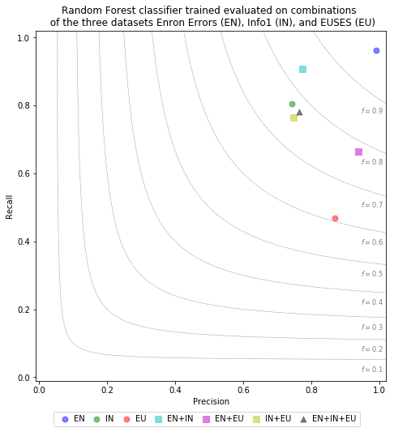

In addition to the studies presented in the paper we also investigated the effect of using a combinatio of datsets for training and evaluation of fault prediction classifiers. In specific, we trained and evaluated Random Forest models using different combinations of our available datasets (Enron Errors, Info1, Euses). The same gridsearch and crossvalidation approach as described for the main studies was employed for this evaluation.
To compare model prediction performances, we employ a custom plot type, the Precision / Recall / F1 plot, that combines precision, recall, and f1-performance for a specific evaluated model. The evaluation result of each trained model is illustrated by a symbol in the plot area. For any given symbol in the plot, its horizontal position corresponds to the precision score of the evaluated model. Likewise, its vertical precision corresponds to the Recall score of the evaluated model. Lastly, the symbol's position in relation to radial lines indicate the model's achieved F1 measure.
We use abbreviations of the datasets in the legend (EN = Enron Errors, IN = Info1, EU = Euses). Plot entries that concatenate different datasets using a "+" symbol signify the results of a model that was trained and evaluated on a combination of the named datasets. E.g. "EN+IN" shows the result of the Random Forest model trained and evaluated on a combination of the "Enron Errors" and "Info1" datasets.
Data CSV